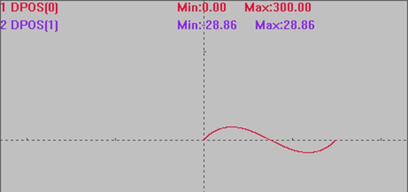
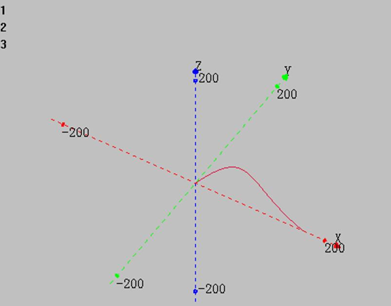

|
类型 |
特殊运动指令 |
|
描述 |
样条插补运动，相对/绝对运动。
样条运动的控制点位置提前写入TABLE数组。 此运动没有SP指令，自定义速度的连续插补运动通过CORNER_MODE的BIT8来设置。 |
|
语法 |
MOVESPLINE (axes,mode ,dtendcontrol4, dtcontrol2, dtcontrol3) axes：插补的轴个数 mode：模式，0-使用3阶贝塞尔样条 dtendcontrol4：第4个控制点存储table索引，对贝塞尔曲线就是终点 dtcontrol2：第2个控制点存储table索引 dtcontrol3：第3个控制点存储table索引
对贝塞尔曲线，第1个控制点就是当前位置。 |
|
适用控制器 |
4系列170507以上固件支持，306x系列161208以上固件支持 |
|
例子 |
例一 BASE(0,1) DPOS=0,0 ATYPE=1,1 '设为脉冲轴类型 SPEED=100,100 '主轴速度 ACCEL=1000,1000 '主轴加速度 DECEL=1000,1000 TRIGGER CORNER_MODE=2 + 256 '设置SP运动, 使用FORCE_SPEED FORCE_SPEED=100 TABLE(0, 100, 100) 'TABLE(0)(1)存储第二个控制点, 相对起点距离 TABLE(10, 200, -100) 'TABLE(10)(11)存储第三个控制点, 相对起点距离 TABLE(20, 300, 0) 'TABLE(20)(21)存储第四个控制点, 终点距离 MOVESPLINE(2, 0, 20, 0, 10) '2轴相对样条插补
插补轨迹 DPOS(0)垂直刻度200 DPOS(1)垂直刻度200 
例二 BASE(0,1,2) ATYPE=1,1,1 '设为脉冲轴类型 UNITS=100,100,100 DPOS=0,0,0 SPEED=100,100,100 '主轴速度 ACCEL=1000 ,1000,1000 '主轴加速度 DECEL=1000 ,1000,1000 TRIGGER
TABLE(0, 100, 100,100) 'TABLE(0)(1)存储第二个控制点, 相对起点距离 TABLE(10, 200, -100,200) 'TABLE(10)(11)存储第三个控制点, 相对起点距离 TABLE(20, 300, 0,0) 'TABLE(20)(21)存储第四个控制点, 终点距离 MOVESPLINE(3, 0, 20, 0, 10) '2轴相对样条插补
XYZ模式下轴0轴1轴2插补轨迹  |
|
相关指令 |